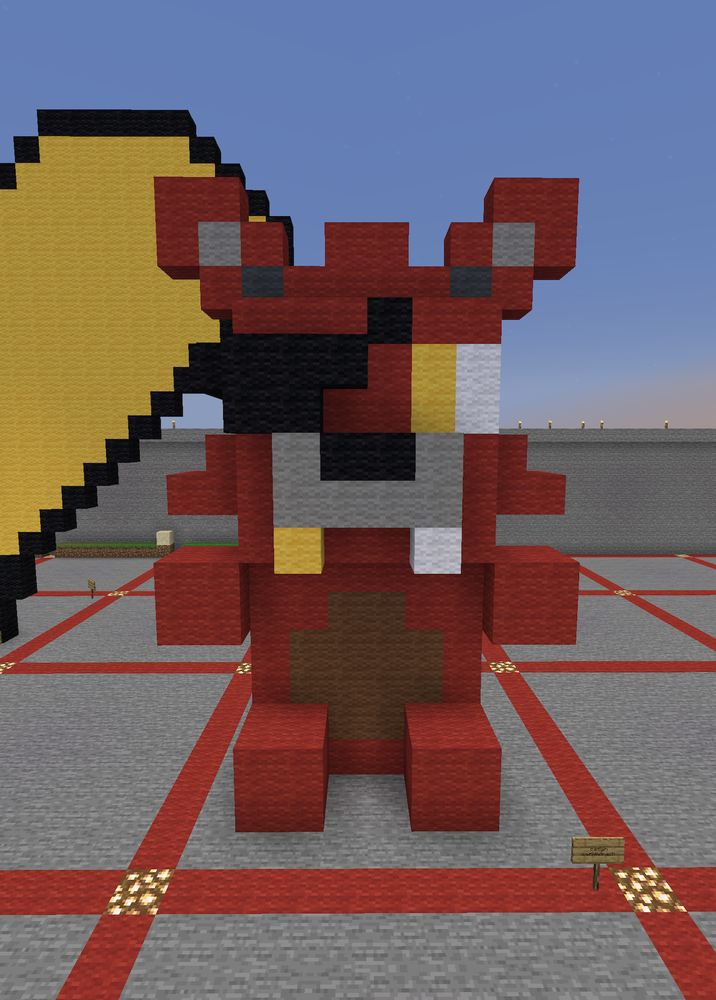

Art 74 - Caitlyn Vu
Minecraft Art
I built a sculpture of Foxy from Five Nights at Freddy's. The game is really culturally significant since many users enjoy the gameplay as well as the lore. In terms of the gameplay, they utilize common fears really well like jump scares, isolation, turned evil children characters, and more. The game made one YoutTuber more popular in particular and that's Markiplier. The lore isn't directly said in the game, which allows users to create theories on what goes on, and a popular theorist is MatPat from GameTheory. The Five Nights at Freddy's universe is huge since it branches out to books as well. It's so culturally significant that memes are made out of each media that is released (games, movie, other's gameplays). I specifically chose Foxy because he's my favorite and is always forgotten or replaced!!

The one to the left was the first print, and was created to see how it turned out as well to determine if any adjustments needed to be made. It seemed okay, so I decided to print it larger. Giant Foxy has its shape however, the supports messed it up a bit. It's mainly my fault for making them ultra thin, which caused a lot of "spaghetti" under some parts. Overall, it wasn't the worst, and I am currently in the process of finishing it up.